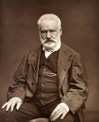
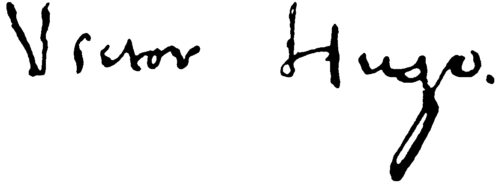

საბრალონი
ინფორმაცია წიგნზე
ავტორი: ვიქტორ ჰიუგო
ჟანრი: ისტორიული, კლასიკა
გამოშვების თარიღი: 1862 წელი
აღწერა:
ვიქტორ ჰიუგოს ზღაპარი უსამართლობის, გმირობისა და სიყვარულის შესახებ მიჰყვება ჟან ვალჟანის ბედს, გაქცეული მსჯავრდებულის, რომელიც გადაწყვეტილია უკან დატოვოს თავისი კრიმინალური წარსული. მაგრამ მისი მცდელობა გამხდარიყო საზოგადოების პატივცემული წევრი მუდმივად ემუქრება საფრთხის ქვეშ: საკუთარი სინდისის გამო, როდესაც, შეცდომით პირადობის შემთხვევის გამო, მის ნაცვლად სხვა მამაკაცი აპატიმრებს; და დაუნდობელი ინსპექტორის ჯავერტის დაუნდობელი გამოკვლევებით. ვალჟანი მხოლოდ თავისთვის არ უნდა დარჩეს თავისუფალი, თუმცა, მან დაიფიცა, რომ დაიცავს ფანტინის პატარა ქალიშვილს, რომელიც სიღარიბის გამო პროსტიტუციას უბიძგებს.
1851 წელს ნაპოლეონ III-ის ხელში ჩაგდების შემდეგ, ფრანგი მწერალი ვიქტორ მარი ჰიუგო გადასახლებაში წავიდა და 1870 წელს საფრანგეთში დაბრუნდა; მის რომანებში შედის ნოტრ დამის ხუჭუჭა (1831) და უბედურები (1862).
ეს პოეტი, დრამატურგი, რომანისტი, დრამატურგი, ესეისტი, ვიზუალური მხატვარი, სახელმწიფო მოღვაწე და, ალბათ, რომანტიული მოძრაობის ყველაზე გავლენიანი, მნიშვნელოვანი წარმომადგენელი საფრანგეთში, ეწეოდა კამპანიას ადამიანის უფლებებისთვის. საფრანგეთში ხალხი მას ამ ქვეყნის ერთ-ერთ უდიდეს პოეტად მიიჩნევს და უკეთ იცნობს საზღვარგარეთ.
ავტორის ხელმოწერა:
